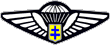
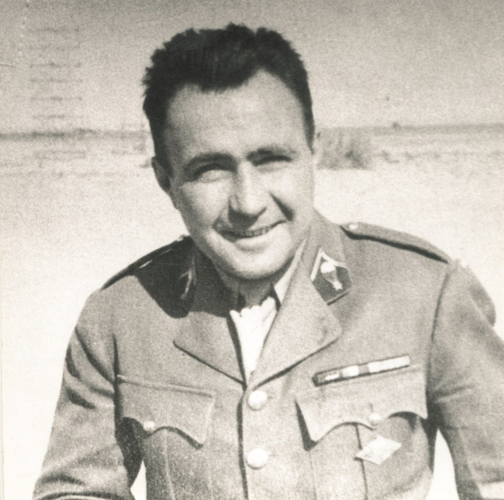
Né le 3 janvier 1909 à Belmont dans le Gers, Georges Roger Pierre BERGE, élève Officier de la promotion 1933-1935 de l'Ecole Militaire d'Infanterie et des Chars de Saint-Maixent, choisit l'Arme de l'Infanterie à la fin de son cycle d'études, puis dès 1937, il opte pour l'Infanterie de l'Air "l'Arme de l'avenir..." au moment même où elle est créée.
Il rejoint alors la 601ème Compagnie d'Infanterie de l'Air de Reims et effectue son stage de saut, mais un ennui de santé l'empêche de poursuivre. Il restera, après cette affectation, convaincu de l'efficacité et de la prépondérance de cette Arme nouvelle. Fantassin, il rejoint alors le 13ème Régiment d’Infanterie de Nevers à la veille de la seconde guerre mondiale. Il y occupera tour à tour les fonctions de Chef de section, puis nommé Capitaine, de Commandant de Compagnie, lors de la déclaration de la guerre.
En pleine bataille il prendra le commandement du 2ème Bataillon. Son P.C. étant installé en bordure d'un cimetière britannique du Hainaut de la guerre 1914-1918, il subit plusieurs attaques avec ses hommes de la Compagnie d'Accompagnement du Bataillon. Toute la journée les fantassins du 2/13ème R.I lutteront farouchement et le Capitaine BERGE sera blessé trois fois. Au soir de cette rude journée, il se laissera enfin évacuer sur l'hôpital d'Arras puis un peu plus tard, sur celui de Caen. Il y séjournera quelques semaines puis bénéficiant d'une permission de convalescence, il rejoint alors Mimizan où résident ses parents. Il y arrive dans la matinée du 17 juin...
Ecoutant alors le dramatique message du Maréchal Pétain demandant aux Français de se résigner et de déposer les armes, et voyant son père Ancien Combattant de la Grande Guerre pleurer en l'écoutant, il est totalement révolté et décide de continuer le combat là où il le pourra. Il tente pourtant de retrouver son régiment. Mais dans la totale impossibilité de rejoindre Nevers, il décide de partir vers l'Angleterre où ont été évacués les combattants de Dunkerque.
Il embarque alors sur le " Jan Sobiesky ", cargo polonais qui ramène des soldats en Grande-Bretagne. Il a sympathisé avec les officiers polonais, ceux-ci lui prêtent un uniforme pour effectuer la traversée... son destin est scellé. Le 20 juin, alors qu'il est en pleine mer, il entend parler de l'appel du Général de Gaulle. Signe du destin, il vogue vers celui qui regroupe en un même idéal, les énergies dispersées de ceux qui ne veulent pas accepter une France à genoux livrée aux Nazis et à leurs collaborateurs. Le 23, sitôt arrivé, il est provisoirement interné dans le camp de Plymouth où stationnent des éléments français du C.E.F.N. rentrant de Narvick.
S'échappant de ce camp, avec deux amis, il rejoint Londres par ses propres moyens. Le 21 au matin, ayant fait un brin de toilette et remis de l'ordre dans sa tenue, il se présente à St Stephen's House, Quartier Général des Français Libres. Reçu par le Général de Gaulle, il en profite pour parler d'un projet qui lui tient particulièrement à cœur: créer une unité de parachutistes. Le Général l'écoute, trouve l'idée intéressante mais n'y donne pas suite sur-le-champ.
BERGE sort de l'entretien affecté comme adjoint du Dépôt des F.F.L. à l'Olympia. Mais l'idée de mettre sur pied sa Compagnie ne le quittera plus. Enfin le 1er août, le Général lui demande de préciser son projet mais en une page et pas plus. Ceci fait, il note en marge "d'accord" et signe.
Le 29 septembre enfin, paraît l'Ordre Général n° 765 se référant de l'Instruction préparatoire du 1er août 1940 signé du Vice-Amiral Muselier commandant les F.A.F.L: la 1ère Compagnie d’Infanterie de l'Air est mise sur pied. Le Capitaine Georges BERGE est nommé Commandant de l'Unité. La volonté d'un jeune Officier, sa détermination, sa foi ont fait naître l'une des plus belles unités de notre Histoire Militaire: les parachutistes de la France Libre. Ils seront au jour de la Victoire, l'Unité alliée la plus décorée!
La suite de cette épopée est maintenant bien connue. A Noël 1940, la 1ère Section sort de l'Ecole britannique de Ringway est brevetée parachutiste. Le Capitaine Bergé a été breveté en même temps que ses hommes.
Le 15 mars 1941, un commando parachutiste aux ordres de BERGE lui-même s'infiltre par parachute dans la région de Vannes dans le Morbihan... première Unité alliée à revenir les armes à la main en France. C'est la mission "Savanah". Si l'objectif n'est pas atteint cette mission prouve au Haut Commandement allié la possibilité d'infiltrer et d'exfiltrer des agents et des commandos en France occupée.
Puis dans la nuit du 11 au 12 mai, deux paras de la 1ère C.I.A. sont parachutés près de Mimizan et prennent contact avec les membres de "Savanah" qui sont restés en France pour organiser un réseau.
Dans la nuit du 14 au 15, la centrale électrique de Pessac en Gironde explose sous les charges des saboteurs.
La Kriegsmarine va en souffrir, les batteries de ses redoutables U.Boats ne seront plus rechargées avant quelques temps. C'est l'opération "Joséphine B". Le commando s'exfiltre sans dégât et rentre en Grande-Bretagne que Bergé rejoint au moyen du sous-marin "Le Tigre".
Churchill lui-même, félicitera l'Officier et le présentera à son Etat-Major et à la Presse quelques jours plus tard au cours d'une Inspection à Ringway. Le Capitaine BERGE et ses hommes viennent de créer le Service Action! La 1ère Section de la 1ère C.I.A rejoint alors le Centre secret de formation des Agents qui seront parachutés en missions individuelles en France occupée.
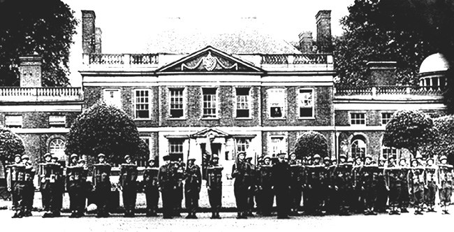
Puis viendra la période moyen-orientale et, là encore, le Capitaine BERGE, allant au bout de son destin, offrira aux parachutistes de la France Libre une spécialité et un titre redouté ou envié: il en fait des S.A.S.
Sa rencontre avec David Stirling jeune Officier impétueux et visionnaire sera déterminante. Les deux hommes ont en commun de croire en ce qu'ils désirent accomplir au point d'en persuader les autres et le Commandement en particulier. Toujours en tête, il accomplira le raid d'Héraklion en Crète, à l'heure où ses équipes attaquent inlassablement les aérodromes et les dépôts de Cyrénaïque et de Libye aux côtés de leurs frères d'armes britanniques.
Extrait du récit du général Bergé sur les dernières heures de l'exploit du commando d'Héraklion: Vers 20 heures, Bergé donne l'ordre de boucler les sacs en prévision du dernier déplacement. Dix minutes plus tard, alors que les S.A.S. s'apprêtent à prendre la route, deux colonnes d'Allemands, comprenant chacune une vingtaine d'hommes, surgissent à l'est et à l'ouest. Dès ce moment, les quatre Français ont compris que l'encerclement est à peu près réalisé. Le groupe tente de s'échapper sur le sud, mais il rencontre une troisième colonne semblable qui s'infiltre à travers les buissons de l'entrée du ravin. Bergé décide alors d'engager le combat, malgré le nombre des assaillants. Il espère le faire durer jusqu'à la nuit, puis profiter de l'obscurité pour s'échapper.
Les Allemands, à distance respectable, ouvrent le feu, Trois fusils mitrailleurs concentrent leur tir vers les quatre Français, tapis derrière les buissons. Des grenades lancées par tromblons explosent autour d'eux sans les atteindre. Les quatre parachutistes, qui n'ont que des mitraillettes portant efficacement à cent mètres, ne répondent pas. Ils conservent leurs munitions.
Un Allemand, qui s'est aventuré trop près, est abattu immédiatement. Cette première riposte refroidit quelque peu l'ardeur des assaillants qui, pendant un bon quart d'heure, s'immobilisent, en tirant de loin.
Léostic, impatient d'en découdre, fait un bond d'une vingtaine de mètres en avant pour se mettre en meilleure position de tir. A peine a-t-il ouvert le feu qu'il est atteint par la rafale d'un fusil mitrailleur caché à cinquante mètres sur sa gauche. Il tombe, mortellement blessé, se relève et tire encore en insultant les Allemands qui s'avancent. Il retombe enfin, achevé par une dernière rafale.
La nuit tombe peu à peu, mais la situation s’aggrave. Les munitions sont épuisées. Sibard, légèrement blessé, est capturé. Bergé et Mouhot se cachent dans les buissons, espérant ainsi échapper aux Allemands. Malheureusement, ils sont découverts l'un après l'autre et emmenés. Pour Bergé, Mouhot et Sibard, c'est la captivité qui commence. Jellicoe et Petrakis, qui ont suivi de loin le combat, seront seuls au rendez-vous du sous-marin. Ils rendront compte à Alexandrie.
Un document, établi à Camberley, en date du 21 septembre 1943, et dû à la plume du sergent Mouhot, évadé perpétuel, donne une idée de la suite:
« Nous sommes envoyés à une Kommandatur et condamnés à mort. Nous sommes mis en cellule, nous y restons quinze jours, puis nous sommes envoyés en Allemagne, près de Francfort. Sibard nous quitte, quatre ou cinq jours après, pour aller à l'hôpital. Je tente une évasion avec mon capitaine, mais je réussis seul à passer à travers les barreaux. Je suis repris quelques jours plus tard. Cette fois, nous sommes envoyés, le capitaine Bergé et moi, à l'Oflag X.C. Je tente deux évasions: Je suis repris à la première. Quelques jours plus tard, à la seconde, je suis repris à la frontière hollandaise, envoyé dans un stalag d'où je m'évade une dernière fois. Je passe en Hollande, puis en Belgique, en France, en Espagne, à Gibraltar, d'où je prends l'avion et arrive en Angleterre, le 11 septembre 1943 ».
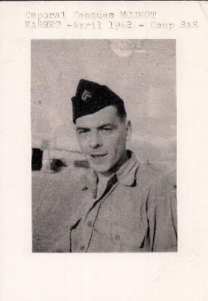
Au cours de ce raid exemplaire, il sera capturé et envoyé tout d'abord à Lübeck puis transféré à la trop fameuse et redoutable forteresse de Colditz en Allemagne, réservée aux prisonniers les plus durs et aux récidivistes de l'évasion.
Il aura la surprise d'y voir arriver tour à tour David Stirling créateur des S.A.S., son ami et son complice, ainsi que le Capitaine Augustin Jordan, son adjoint qui commanda la 1ère C.C.P. après qu'il ait été capturé. Fin avril 1945, il sera enfin libéré par l'avance alliée.
A ce moment, les parachutistes français libres du S.A.S. sont devenus des héros. Beaucoup, dont des rescapés de "son" French Squadron, sont tombés en France, en Ardennes, en Hollande. Leur drapeau est désormais, l'emblème qui a été le plus décoré au cours de la seconde guerre mondiale
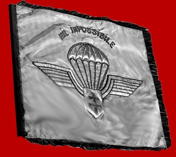
Le fanion de l'Unité. Ce fanion, dont l'original est aujourd'hui déposé en Salle d'Honneur à Bayonne, a suivi les Paras français depuis la Grande Bretagne jusqu'au Moyen-Orient, et les rescapés du French Squadron l'ont ramené avec eux en Grande-Bretagne après l'épopée du désert
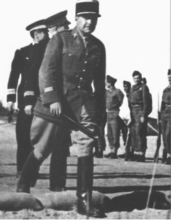
Georges BERGE, Commandant, Compagnon de la Libération, Officier de la Légion d'Honneur, Croix de guerre avec palmes regarde ces hommes au béret rouge défilant fièrement en ce 18 juin 1945 sur les Champs-Elysées où souffle le vent de la victoire et le calme ensoleillé de la paix qui revient. Il est fier... Fier de ce qu'ils ont fait... Fier du combat qu'ils ont mené appliquant au-delà de toute mesure la devise du S.A.S. traduite en français "Qui ose gagne", qu'il leur a légué et dont ils ont été très dignes.
D'ailleurs ne portent-ils pas sur la poitrine l'insigne au parachute blanc supportant l'écu à croix de Lorraine qu'il a lui-même créé pour la 1ère C.I.A. un jour de 1941 où seul l'espoir de lendemains meilleurs et un fort idéal d'honneur et de liberté les portaient vers leur destin...
Nommé Lieutenant-colonel en 1946, il est alors affecté à l'Etat-Major de la Défense Nationale, qu'il quittera en fin 1947, étant nommé Attaché Militaire auprès de l'Ambassade de France à Rome. En 1952, il prend le commandement du 14ème Régiment d'Infanterie Parachutiste de Choc nouvellement créé à Toulouse.
Lorsqu'il quittera ce commandement prestigieux, il occupera les fonctions d'Adjoint du Général Inspecteur des Troupes Aéroportées de 1954 à 1956. Servant une fois de plus au sein d'une "arme nouvelle" et de pointe, il est nommé en 1957 Adjoint au Général commandant l'A.L.A.T à l'heure où le concept aéromobile à base d'hélicoptères se développe.
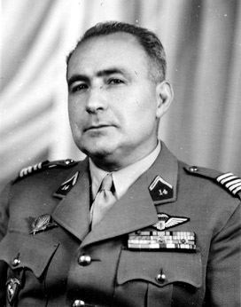
En 1960, en pleine guerre d'Algérie, il prend le commandement du secteur militaire de Corneille. Il reçoit ses étoiles de Général de Brigade le 1er juillet 1961. Mais le reste de sa vie sera consacré aux Anciens de l'épopée. Président d'Honneur de l'Amicale S.A.S, il n'aura de cesse de veiller sur ceux qui furent – titre de noblesse envié – les Paras de la France Libre.
Le Général Georges BERGE s'est éteint à Mimizan le 15 septembre 1997, après avoir reçu un dernier hommage des vétérans et des jeunes générations héritières de l'Epopée.
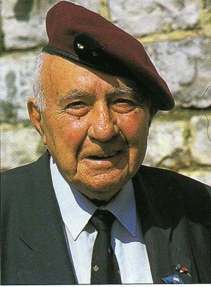
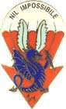
La 1ère Cie du 1er RPIMa a repris sur son insigne la devise de la 1ère C.C.P, devise due au Capitaine G Bergé à l'époque
Commandeur de la Légion d'Honneur
Compagnon de la Libération - décret du 17 novembre 1945
Grand Officier de l'Ordre National du Mérite
Croix de Guerre 1939-45 (4 citations dont 3 à l'Ordre de l'Armée – avec palmes)
Croix de la Valeur Militaire avec palme
Médaille de l'Aéronautique
Officer of the British Empire (GB)
Military Cross (GB)
Cruz Militar (Espagne)
Commandeur de l'Ordre de Georges 1er (Grèce)
Commandeur de l'Ordre du Ouissam Alaouite
Aujourd'hui la Citadelle qui abrite le Régiment S.A.S français, héritier de l'Epopée S.A.S dans son ensemble - le 1er R.P.I.Ma - porte son nom, et l'Avenue qui y mène est baptisée "Avenue des Parachutistes S.A.S".
Plus encore que « Qui Ose Gagne », la devise du Général BERGE fut depuis Londres, en 1940, et jusqu'au bout de sa vie: « NIL IMPOSSIBILE » - « Rien n’est impossible ».
Il fit broder sa devise sur le fanion de la 1ère Compagnie en des heures sombres où l'on ne se nourrissait que d'Espoir. Sa devise est aujourd’hui conservée par la 1ère Compagnie du 1er RPIMa.
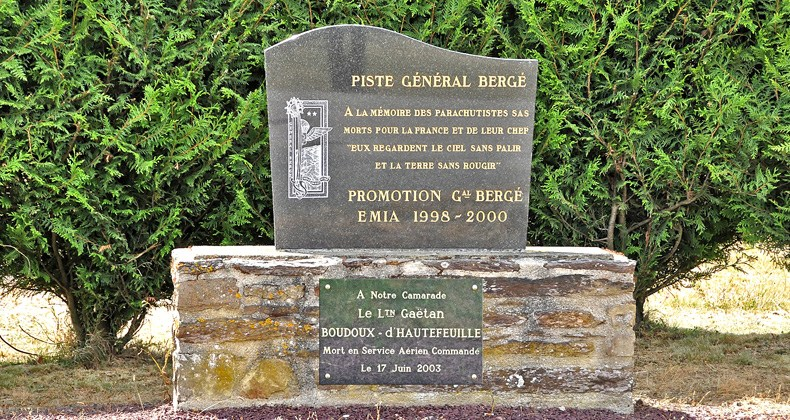
Stèle en marbre sur socle de pierre de schiste violet, située à l’entrée de l’aérodrome de Coëtquidan N° 29, inaugurée en 2000 par la promotion éponyme de l’E.M.I.A. N° 38. Photo: 19 juillet 2006.
Lieutenant Gaëtan Boudoux d'Hautefeuille, chef d'équipe a la section C.R.A.P.S du 2ème REP. Largué d'un hélico Puma sur la D.Z de Borgo en saut de nuit à très haute altitude, une manœuvre intempestive de sa voile principale, ne lui a laissé aucune chance de s'en sortir Décédé le 17 Juin 2003
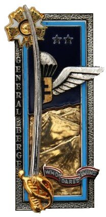
Promotion E.M.I.A. N° 38 “ Général BERGÉ ” 1998 – 2000
(…) Faits trop souvent méconnus montrent qu'en France dans toutes les régions les SAS ont livré leurs combats avec le soutien et la participation courageuse des forces de l'intérieur. Les Britanniques, comme nous, bénéficièrent partout de l'appui total des maquis et des résistants. Les unités du Spécial Air Service, qui avaient pour devise « Qui ose gagne » sont donc bien les seules à s'être battues sur tout le territoire pour la Libération de notre Pays, du Nord au Sud, de l'Est à l'Ouest ensemble avec les forces de l'intérieur, partageant avec elles les victoires et les sacrifices. Pour les paras de la France libre du Spécial Air Service la bataille ne se terminera qu'en Hollande où ils seront parachutés début avril 1945. Dernières victoires, derniers sacrifices. En trois ans et demi de combats sur tous les fronts leur drapeau sera le plus décoré de la guerre, recevant la croix de Compagnon de la Libération, la Légion d'honneur, la croix de guerre avec sept palmes, l'US bronze star, le lion de bronze hollandais.
« Pour les parachutistes, la guerre ce fut le danger, l’audace, l’isolement. Entre tous, les plus exposés, les plus audacieux, les plus solitaires, ont été ceux de la France libre. Coups de main en Crète, en Libye, en France occupée; combats de la libération en Bretagne, dans le Centre, dans l’Ardenne; avant-garde jetée du haut des airs dans la grande bataille du Rhin; voilà ce qu’ils ont fait, jouant toujours le tout pour le tout, entièrement livrés à eux-mêmes, au milieu des lignes ennemies. Voilà où ils perdirent leurs morts et récoltèrent leur gloire. Le but fut atteint, la victoire remportée. Maintenant ils peuvent regarder le ciel sans pâlir et la terre sans rougir ».
Par Georges Caïtucoli - Article paru dans Espoir n°100, 1995 sous le titre "Les SAS et le débarquement"
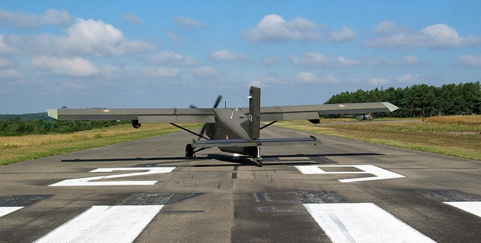
Aérodrome de Coëtquidan - Photo: 22 juillet 2005 - Largage de parachutistes
Parmi les volontaires et les jeunes officiers engagés dans les SAS français, l’aspirant André Zirnheld est tué au combat le 27 juillet 1942.
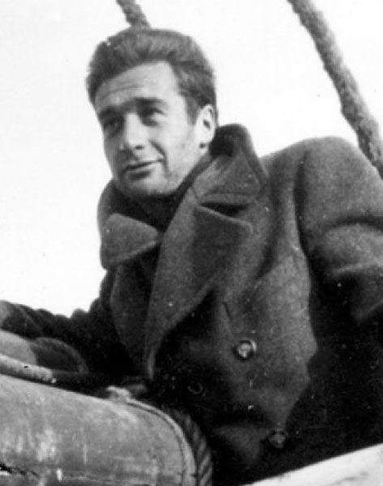
André Zirnheld est né le 7 mars 1913 à Paris dans une famille alsacienne ayant choisi la France en 1870. Il perd son père à l'âge de 9 ans et fait ses études secondaires au collège Saint Jean de Passy. Bachelier puis licencié de Philosophie en 1936, il prépare en Sorbonne, à la veille de la guerre, un diplôme d'études supérieures de Philosophie sur Spinoza, tout en travaillant dans une maison d'édition. Nommé professeur en 1937 au collège de Sousse, puis au lycée Carnot à Tunis. Devant faire son service militaire, il demande vainement un sursis pour préparer l'Agrégation. Il est donc, en octobre 1938, détaché en qualité de militaire comme professeur au Collège de la Mission laïque française de Tartus en Syrie. Au lendemain de l'armistice qu'il refuse totalement, André Zirnheld franchit la frontière libano- palestinienne à Nakoura et rejoint les Britanniques. C'est plus tard qu'il notera dans son carnet: " La légalité est un confort dont il faudra savoir se prive r". C'est à ce moment, en tout cas, qu'il commence à le penser. Il s'engage à la 3ème Cie du 24ème Régiment d'Infanterie Coloniale du capitaine Folliot qui stationne d'abord au camp palestinien de Sumeiriya puis à Moascar en Egypte où elle prend rapidement, après la fusion avec les hommes du capitaine Lorotte, le nom de 1er Bataillon d'Infanterie de Marine. Affecté à la section de commandement de la 1ère Compagnie, le sergent-chef Zirnheld s'entraîne activement jusqu'au 6 septembre, date à laquelle l'unité part s'installer à Sidi-Barani, sur la frontière égypto- libyenne pour combattre les Italiens auprès de la 7ème Division Britannique, celle des "Rats du Désert". Chauffeur du médecin de la Compagnie pendant les cinq mois d'opérations en Libye, André Zirnheld aspire à une affectation plus dangereuse lorsqu'il est muté, en janvier 1941, au service de l'Information et de la Propagande à la Délégation de la France Libre que dirige Georges Gorse, au Caire. En mai 1941, il obtient de suivre les cours de l'Ecole d'élèves officiers de Brazzaville et après trois semaines de voyage parvient au camp Colonna d'Ornano. Sa formation se termine en décembre 1941 et il sort, avec le grade d'aspirant, 5ème de sa promotion. Il choisit de servir chez les parachutistes des FFL, placés sous les ordres du capitaine Bergé. Il rejoint alors, en mars 1942, le French Squadron, intégré à la Special Air Service Brigade ( SAS Brigade ) britannique commandée par le Major Stirling, à Kabret, sur les rives du canal de Suez.
Bientôt, après la capture de Bergé en Crète, les SAS français opèrent en Cyrénaïque sous les ordres du capitaine Augustin Jordan. Le 7 juin l'aspirant Zirnheld à la tête de son groupe, part en avion pour l'oasis de Siwa, aux confins égypto-libyens, base de départ pour l'attaque de plusieurs aérodromes allemands en Cyrénaïque. Des équipes autonomes de 7 ou 8 hommes, sous le commandement d'un officier, ont pour mission d'effectuer des sabotages à des centaines de kilomètres derrière les lignes ennemies pour paralyser, dans la mesure du possible, l'aviation d'interception ennemie. Le 11 juin, Zirnheld et sa patrouille sont largués en pleine nuit sur la côte de Cyrénaïque à une trentaine de kilomètres de l'objectif. Leur mission consiste à détruire le plus possible d'avions ennemis sur un des trois aérodromes proches de Benghazi. Le lendemain, Zirnheld parvient à faire sauter cinq Messerschmitt 109 après avoir neutralisé la défense adverse. Le Major Stirling le propose immédiatement pour la Military Cross. Début juillet les SAS français vont s'installer aux abords de la piste Marsa Matruh - Siwa et multiplie les attaques contre les arrières du Maréchal Rommel. Le 26 juillet dans la soirée, une équipe franco-britannique de 60 hommes équipés de jeep attaque en force l'aérodrome de Sidi Haneish, près de Marsa Matruh. L'attaque est un succès et une trentaine d'appareils ennemis sont détruits. Les parachutistes repartent mais une crevaison oblige l'aspirant Zirnheld et l'aspirant Martin à quitter le convoi, à réparer et à camoufler leur véhicule à quelques kilomètres de là. Le jour se lève et, vers 7H30, quatre Stukas lancés à la poursuite des parachutistes attaquent les deux jeeps qui s'abritent tant bien que mal au pied d'une falaise. André Zirnheld est blessé deux fois par les rafales qui ratissent le désert. L'aspirant Martin met aussitôt le cap à l'ouest. Mais à midi André Zirnheld meurt après de terribles souffrances. Il est inhumé par ses camarades en plein désert sur le rebord d'un oued puis est inhumé au cimetière militaire de Marsa Matruh. Son corps repose aujourd'hui au cimetière des Batignolles à Paris. En faisant l'inventaire de ses quelques biens – dont le tribunal de Vichy avait ordonné la saisie – on trouva deux livres: le Saint-Paul de Jacques Maritain, et un Bergson, plus son carnet manuscrit qui contenait un poème écrit en avril 1938 et intitulé La Prière. C’est ce poème qui deviendra célèbre sous le nom de La Prière du parachutiste.
• Compagnon de la Libération - décret du 1er mai 1943 • Médaille Militaire • Croix de Guerre 39/45 avec 2 palmes • Médaille de la Résistance avec rosette
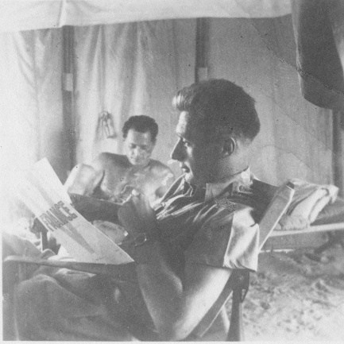
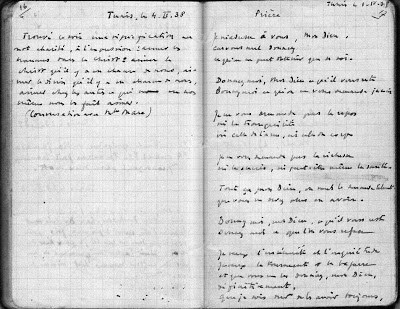
Dans son carnet, André Zirnheld notait réflexions et citations. Un seul poème y figure, aux pages 17 et 18, intitulé simplement Prière. Il est daté d'avril 1938. André Zirnheld était alors enseignant de philosophie en Tunisie, et son inspiration était, semble-t-il, plus mystique que militaire.
Je m’adresse à Vous, mon Dieu,
Car Vous donnez Ce qu’on ne peut obtenir que de soi. Donnez-moi, mon Dieu, ce qui Vous reste, Donnez-moi ce qu’on ne Vous demande jamais.
Je ne Vous demande pas le repos,
Ni la tranquillité, Ni celle de l’âme, ni celle du corps. Je ne Vous demande pas la richesse,
Ni le succès, ni même la santé. Tout ça, mon Dieu, on Vous le demande tellement,
Que Vous ne devez plus en avoir. Donnez-moi, mon Dieu, ce qui Vous reste,
Donnez-moi, ce que l’on Vous refuse.
Je veux l’insécurité et l’inquiétude Je veux la tourmente et la bagarre, Et que Vous me les donniez, mon Dieu,
Définitivement. Que je sois sûr de les avoir toujours, Car je n’aurai pas toujours le courage
De Vous les demander. Donnez-moi, mon Dieu, ce qui Vous reste, Donnez-moi ce dont les autres ne veulent pas,
Mais donnez-moi aussi le courage,
Et la force et la foi, Car Vous êtes seul à donner Ce qu’on ne peut obtenir que de soi.
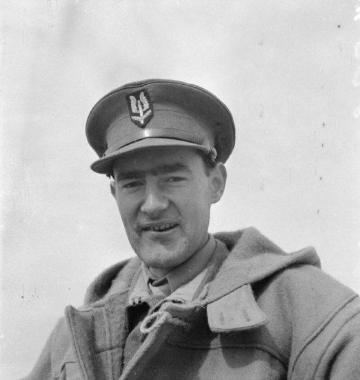
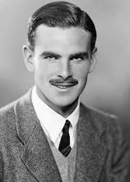
David Stirling - John Steel Lewes alias Jock,
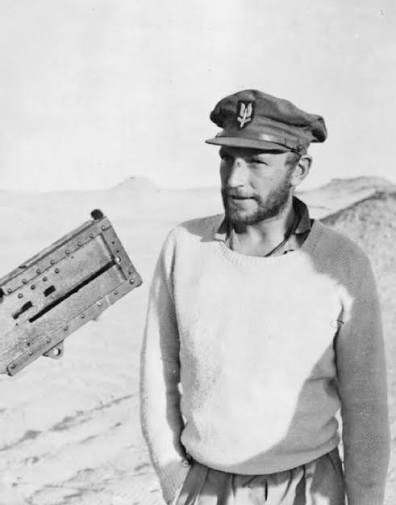
Paddy Payne
Archibald David Stirling, John "Jock" Steel Lewes (parfois orthographié Lewis) et Paddy Mayne, les trois cofondateurs du SAS
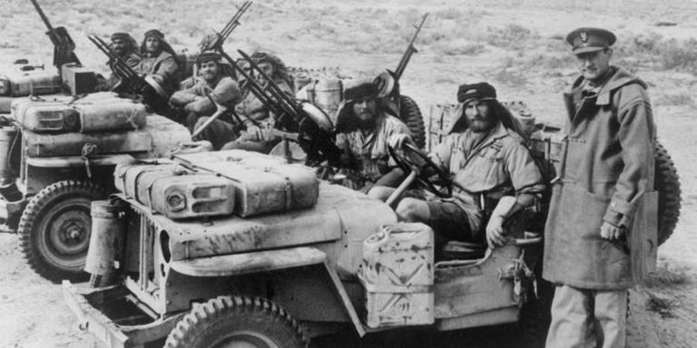